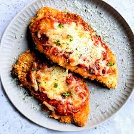

Home
Gluten Free Chicken Parm Recipe

This recipe takes a little prep work, but it's easy and great for sandwiches or pasta!
Ingredients
- 2lbs chicken breast, prepped to cutlet size
- 1 bag gluten free Corn Chex cereal, crushed
- 2 eggs
- 1/4 cup milk
- 8oz Parmeasan Cheese
- marina sauce
- Canola Oil, to fill frying pan
- Gluten Free flour
- Desired spices, to taste
Steps
- If not already done, cut chicken into flat cutlets
- Add eggs and milk to a bowl, whisk
- Add 6oz of cheese to crushed Chex cereal in dish or tray
- In a seperate bowl, add flour and desired spice, mix
- Heat Canola oil in pan
- Take chicken, dip first in flour mix, then egg wash, then cereal
- Press cereal into chiken cutlet
- Fry chicken cutlet, 5-7 min per side, drain and cool after
- Top finished cutlets with marina and cheese
- Serve cut with pasta or whole on sandwiches!